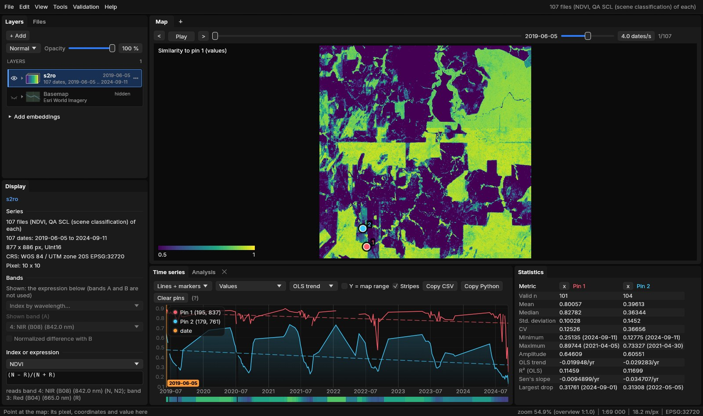
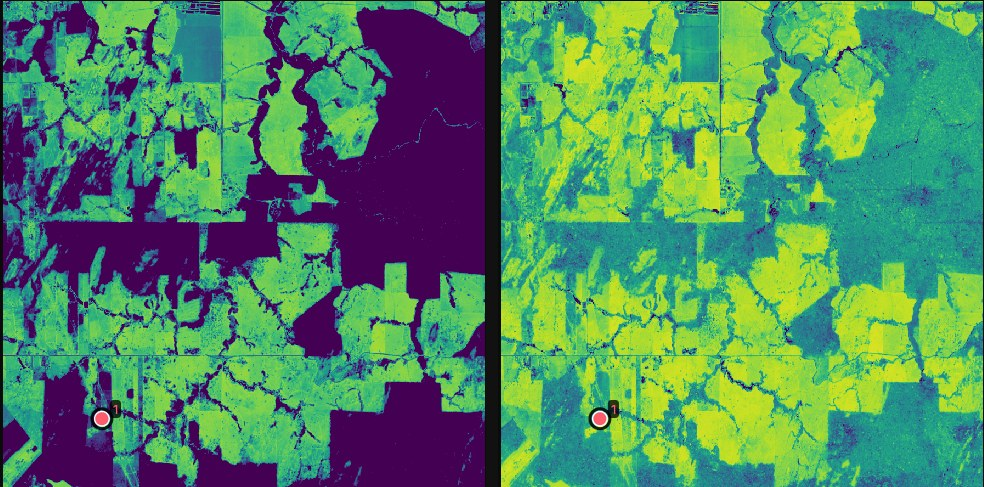
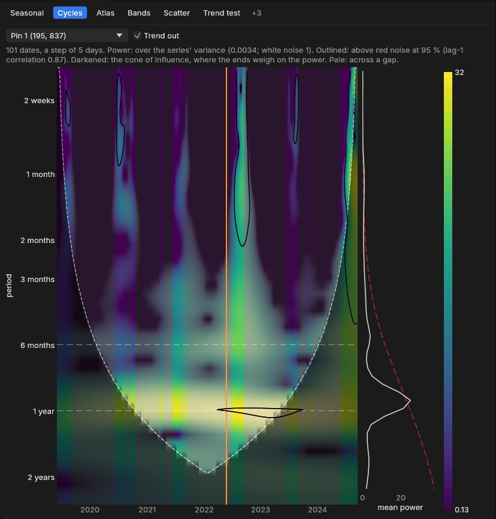
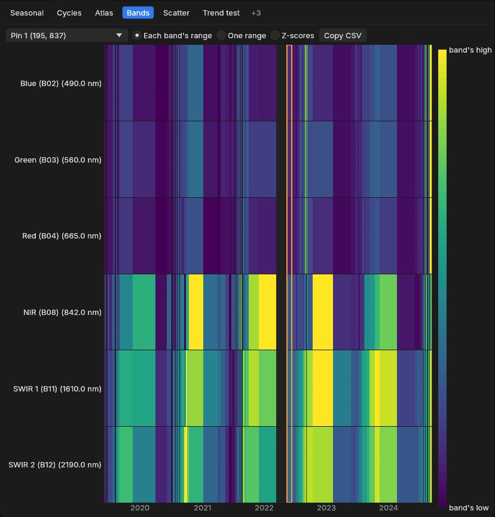
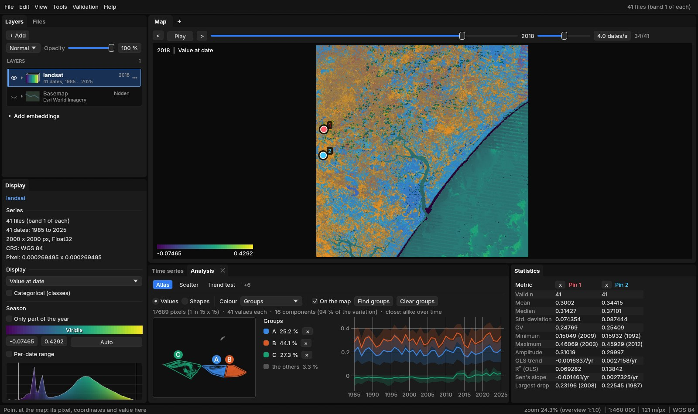

01Four views
Each view answers a different question. The similarity map is a mode of the map; the other three are tabs of the Analysis panel, open next to Time series whenever a series is (View → Analysis hides it). Cycles and Bands are about one place (the cursor, a pin or the ROI's mean); the similarity map and the Atlas about every pixel at once.
| View | Answers | Needs |
|---|---|---|
| Similarity to a series (map) | Which places behaved like this one over time, by their values or by the shape of their curve. | 3 dates or more |
| Cycles | Which cycles a place goes through (a year, a second crop, none) and when. | 4 dates or more a year, over two years |
| Bands | How every band of a place moved over time, side by side. | Several bands a date |
| Atlas | What kinds of behaviour the region has, where each one is, and how much of the region it covers. | 3 dates or more |
The Analysis panel only shows the tabs that work on the data open. The others are counted at the end of the row (+3 on the Sentinel-2 series, +6 on the annual Landsat one), and hovering the count lists them with what each one needs: Seasonal and Cycles need several dates a year, Bands several bands a date, Classes and Areas a categorical layer, Zonal a vector layer. A tab chosen stays chosen: open data it fits and it comes back.
02The examples
- Sentinel-2 over Rondônia: the series of the STAC guide, 107 dates from June 2019 to September 2024 (5% of clouds at most, so mostly dry-season dates), six bands, the NDVI shown. Pin 1 (195, 837) is in a forest, pin 2 (179, 761) in a pasture.
- Landsat over Sergipe and Alagoas: 41 annual medoid composites of a vegetation index, 1985 to 2025, the 2000 × 2000 pixels around the mouth of the São Francisco river of the Maps to numbers guide, at the date 2018.
03The similarity map
Choose Similarity to a series in the Display panel and the map shows, for every pixel, how alike its series is to one place's: the cursor's (the map follows the mouse), a pin's or the ROI's mean. It is the question an embedding's similarity map answers, asked of the series itself: where else did this happen?


Two pixels are compared over the dates both have (the season's, if the map shows only part of the year), on the band or index shown:
- Values: 1 less the RMS difference of the two series over the layer's range of values (2 to 98%): 1 the same values at every date, 0.5 half the range apart. The colours run from 0.5 to 1.
- Shape: the correlation of the two series: 1 the same curve whatever its level, 0 unrelated, below 0 opposite. A crop's calendar on poorer and richer soils, or a pasture that greens and dries like another, are alike by shape though not by values.


Reference and Compare sit under the mode in the Display panel. The map is computed on the GPU from the dates already there for the map, again whenever the reference changes, so with the cursor as reference the comparison moves with the mouse. The status line shows the similarity under the pointer.
04Cycles
A wavelet transform shows which periods a series oscillates at, and when. The horizontal axis is time, the vertical one the period (from two weeks to two years here), and the colour the power: how strongly the series oscillates at that period at that time.


- The dates are put on a regular step first (here 5 days, Sentinel-2's revisit), the gaps filled linearly; columns across a gap longer than two steps are pale. Trend out removes the linear trend as well as the mean.
- The power is over the series' variance: white noise is 1 on average.
- Outlined: above red noise at 95%, that is, stronger than a series with only the same memory from one date to the next (its lag-1 correlation, 0.87 here) would give by chance.
- The cone of influence (darkened) is where the series' ends weigh on the power: long periods near the start or the end are not to be trusted.
The method is the Morlet wavelet as computed by Torrence & Compo's (1998) code, and Janus' scalogram matches it computed again in numpy. A double crop shows as a second band at six months; a clearing as the yearly band stopping.
05Bands
Every band of a place over time, as a heatmap: a row a band, a column a date. It shows at once what a line chart of six bands mixes up.


The colours are each band's own range (to see each band's changes), One range for all (to compare their levels, as a spectrum would) or Z-scores (each band's departures from its mean, in standard deviations). Copy CSV copies the dates and every band's value.
06Atlas
The Atlas puts every pixel's series in one picture. Pixels that behaved alike over time land close together in a plane, so each cluster is a kind of behaviour of the place: a forest, a crop, water, a clearing. The plane is linked to the map both ways.


- SampleUp to 20,000 pixels on a grid of the ROI or the image, each series as its values at every date (gaps filled linearly from the dates around them).
- ReduceThe series projected on their 16 principal components (here 94% of the variation).
- NeighboursEach pixel's 15 nearest neighbours, exactly.
- Lay outUMAP: a plane where those neighbours stay close. The plane settles as it runs.
- PlaceEvery pixel of the region, not only the sample, placed with its nearest sampled pixel, so a group's share is of the whole region.
Drag around points to make a group (three at most, A, B and C), or press Find groups for three found by k-means. The pointer over the plane lights the pixels like the ones under it on the map; over the map, it rings its pixel in the plane; a click on a point pins its pixel. Colour shows the points' density, their group, or their value at the date, mean, amplitude or trend. Shapes compares the curves' form whatever their level (each series standardized): the same crop calendar on poorer and richer soils lands together.
Reading the plane
UMAP keeps neighbours together, not distances: two clusters far apart are different, but how far apart says little. Read the clusters, not the gaps between them, and check a cluster on the map and in its curve before naming it.
07Speed
Measured on a whole Landsat scene of the Trend test guide (41 dates of 7478 × 7319 pixels, read as an overview of 5.5 million pixels):
| Step | Time |
|---|---|
| Atlas: 18,900 series sampled, reduced to 16 components | 15 ms |
| Atlas: every sample's 15 nearest neighbours, exact | 0.3 s |
| Atlas: the UMAP layout (8 threads) | 0.7 s |
| Atlas: the 5.5 million pixels placed (4 threads) | 1.2 s |
The Atlas runs on its own thread with the processing threads (File → Settings), and the interface stays responsive meanwhile; the plane appears as soon as the layout starts and settles as it runs. The similarity map is computed on the GPU like the other modes of the map, so it follows the cursor as it moves.
08From the command line
--mode shows the similarity map and --analysis opens the panel at a tab, with their options after commas:
janus SERIES --mode similarity[,shape][,pin|roi]
janus SERIES --analysis cycles[,trend]
janus SERIES --analysis bands[,common|zscore]
janus SERIES --analysis atlas[,shapes][,groups][,density|value|mean|amplitude|trend]shape compares the curves' shape rather than their values, pin and roi with the first pin or the ROI's mean rather than the cursor; trend keeps the trend in the cycles; common and zscore are the bands' scales; groups finds three groups once the atlas is laid out. With --screenshot, Janus waits for the Atlas to settle before taking it.
09References
- Torrence, C., Compo, G. P. (1998). A practical guide to wavelet analysis. Bulletin of the American Meteorological Society, 79(1), 61–78. doi:10.1175/1520-0477(1998)079<0061:APGTWA>2.0.CO;2
- McInnes, L., Healy, J., Melville, J. (2018). UMAP: Uniform Manifold Approximation and Projection for dimension reduction. arXiv:1802.03426